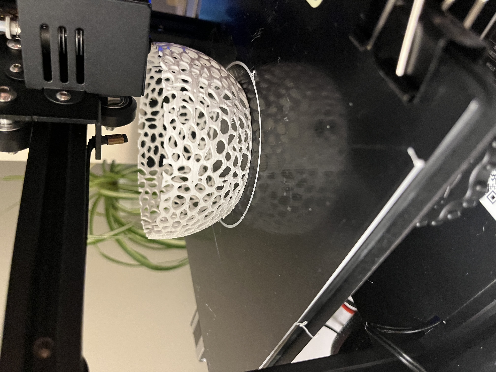
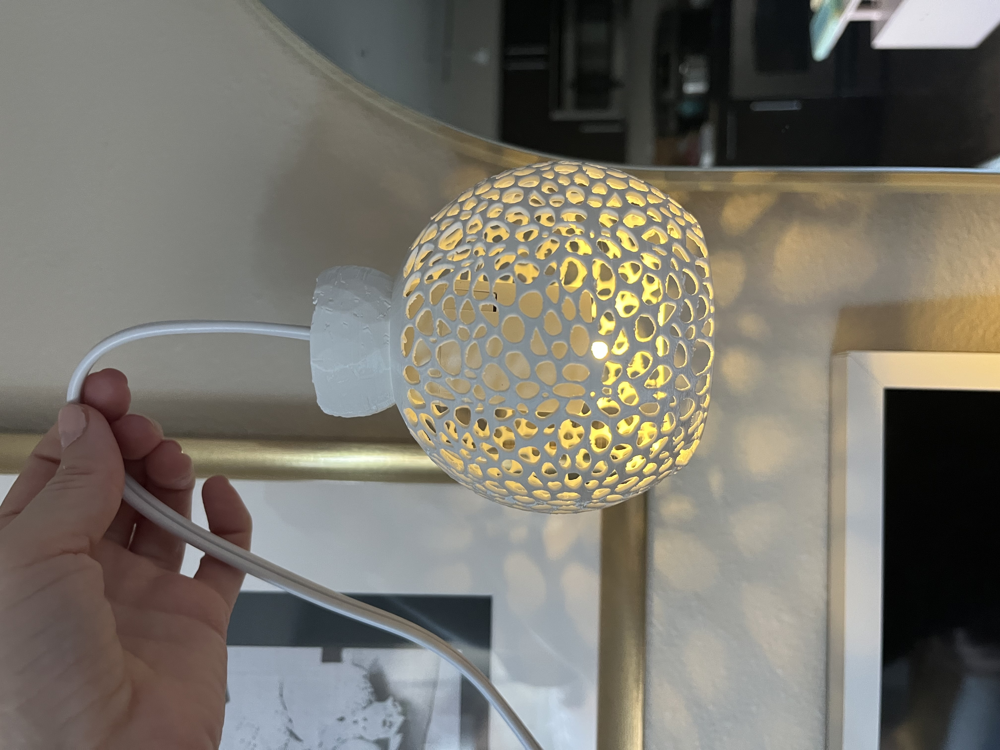
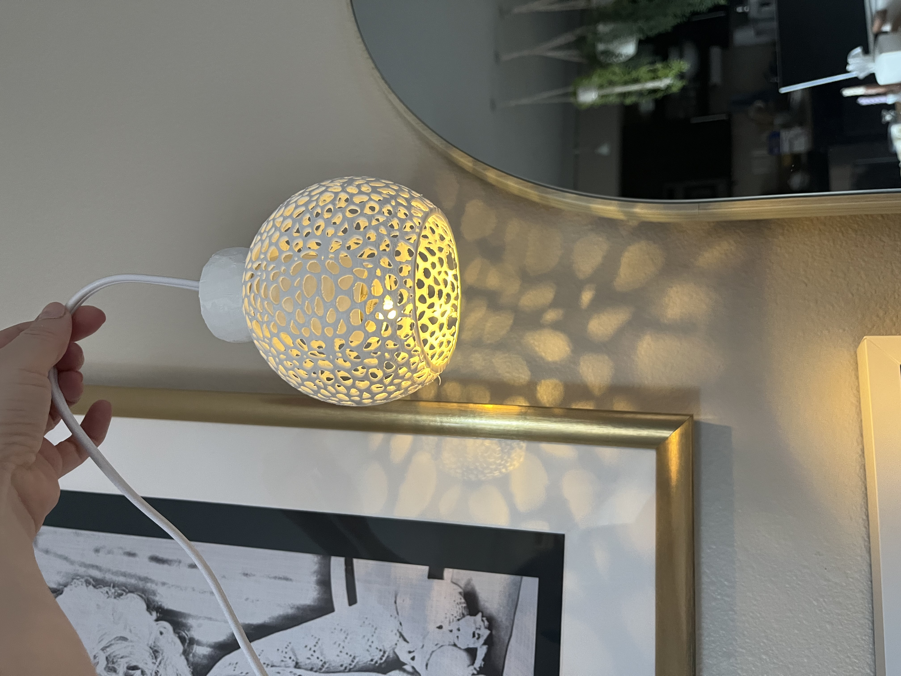
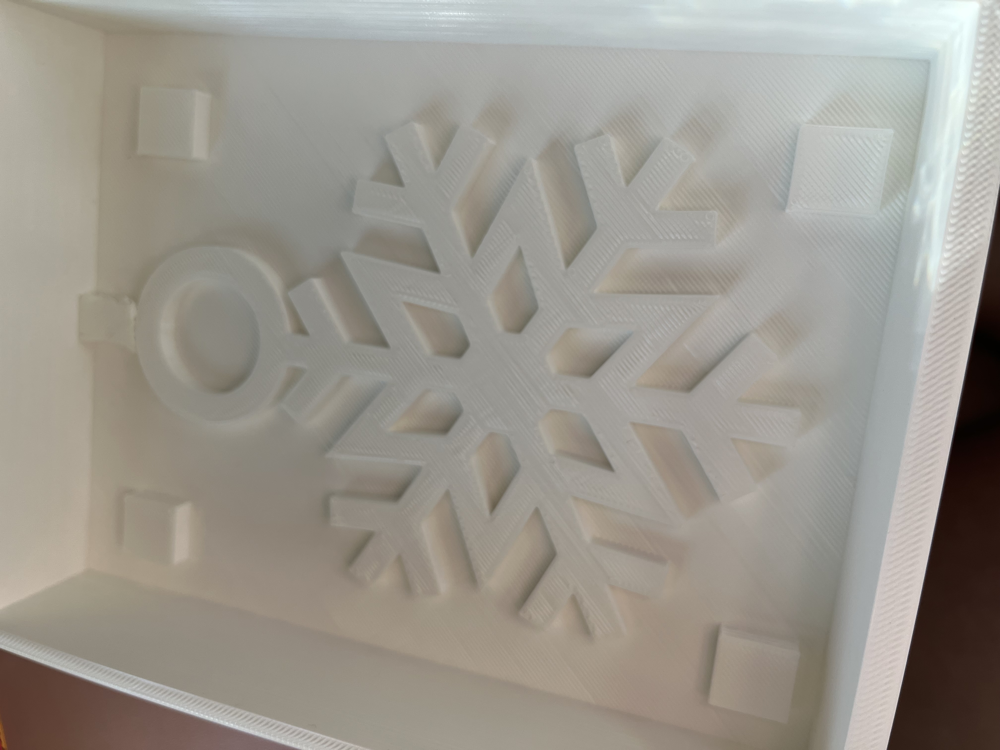
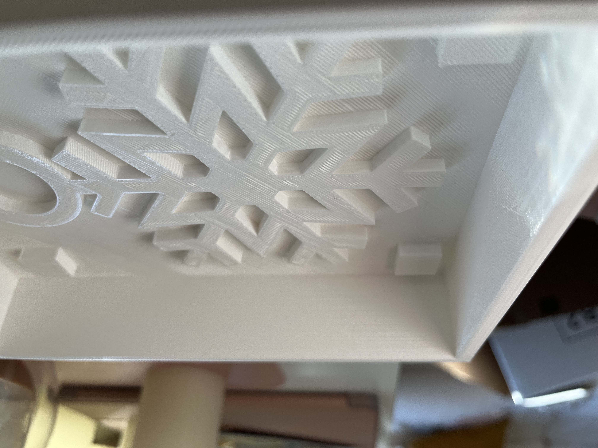
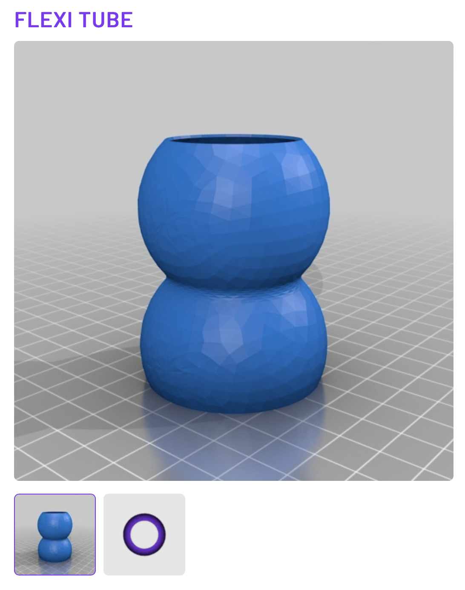
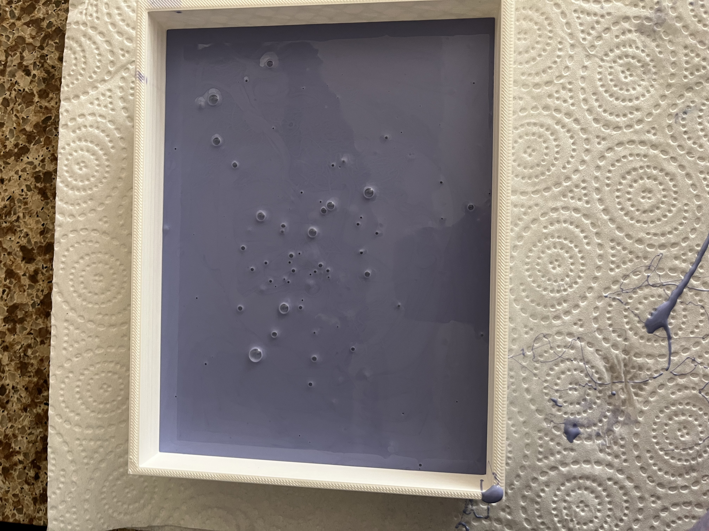

The Goal: Print a lamp that can connect and detach from a light source.
Tools Used: Rhino, Calipers, STL files, Cura lots of patience.

I used the lamp shade that I created in week one of this assignment. The two combined shapes were acoral inspired, round lamp shade and another simple piece to anchor the shape to the light fixture.



The Goal: Design and begin fabrication of a 2-part (silicone) mold.
Tools Used: Rhino, Calipers, STL files, Cura, Oomoo 30 Silicone.

I wanted to make a snowflake ornament for my christmas tree or something that could potentially also work as a tree topper. I designed the base of the mold by taking two boxes in cura and doing a BooleanDifference command. I then made the box a mesh with the Mesh command and joined it with a mesh snowflake that I creaed from cutting shapes that I placed together in Rhino.


Both prints (top and bottom) took approximately 10 hours each. I then took the Oomoo 30 and combined 1 cup the pink mixture and one cup of the blue mixture to create the purple silicone mold to pour into the printed mold.

After six hours I removed the silicone mold from the printed mold. Next week I will be attempting to cast using the two silicone molds.

 Shout Outs: Akshay Rawat and David Pearl for their encouragement and help talking through assignments!
Shout Outs: Akshay Rawat and David Pearl for their encouragement and help talking through assignments!